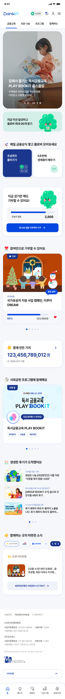
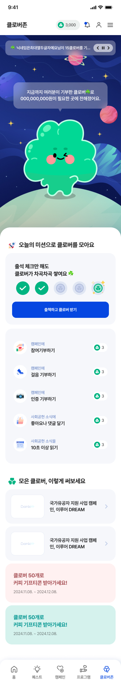
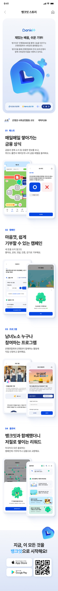

2025
Bankit Renewal
핀테크 서비스 Bankit의 전면 리뉴얼 프로젝트로, WCAG 2.1 AA 기준 웹·앱 접근성 심사 통과와 하이브리드 웹앱 구조 개선을 담당했습니다.
Screenshots



Background
Bankit은 모바일 중심의 핀테크 서비스로, iOS·Android 앱 내 WebView로 서비스되는 하이브리드 구조를 가지고 있습니다. 리뉴얼 이전 마크업은 시맨틱하지 않은 div 중심의 구조로, 스크린리더 사용자와 앱 접근성 심사에서 반복적으로 문제가 발생했습니다. 이번 프로젝트에서는 서비스 중단 없이 접근성 기준을 충족하는 마크업으로 전환하는 것이 핵심 과제였습니다.
Responsibilities
- WCAG 2.1 AA 기준 전 페이지 웹 접근성 개선 및 심사 대응
- Android·iOS 앱 접근성 항목 점검 및 개선 (포커스 순서, 레이블, 역할 지정)
- React Native WebView 환경의 JS 브릿지 통신 구조 정리 및 문서화
- 버튼, 인풋, 모달 등 공통 컴포넌트 시맨틱 마크업 가이드 작성
- 갤럭시 토크백·iOS 보이스오버 환경 직접 테스트 및 QA팀 협력
Key Challenge
기존 마크업이 모두 div + 커스텀 클래스로 구성되어 스크린리더가 역할·상태를 인식하지 못했고, 앱 접근성 심사에서 탈락 위기 상황이었습니다.
전체 마크업을 시맨틱 HTML5 요소 기반으로 재작성하고, role · aria-label · aria-expanded 등 ARIA 속성을 컴포넌트 단위로 체계화하여 적용했습니다.
웹 접근성 심사 1회 통과, 앱 접근성 심사 1회 통과. 보이스오버·토크백 환경에서 주요 플로우 스크린리더 동작 100% 검증 완료.
Retrospective
웹 접근성과 모바일 접근성을 모두 고려하려면 시맨틱 마크업과 ARIA는 컴포넌트의 첫 줄부터 함께 가야 할 설계의 기본입니다. 이 원칙 하나가 심사 통과 속도를 바꾸고, 스크린리더 사용자에게 실질적으로 다른 경험을 만들어 냅니다. 이 프로젝트 이후로, 마크업을 시작할 때 항상 "스크린리더는 이 요소를 어떻게 읽을까?"를 먼저 떠올립니다.